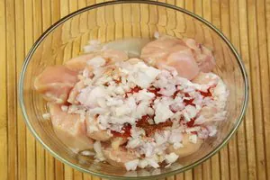

Butter Chicken
the authentic Indian cuisine.

''Butter Chicken'' - The name alone can make you want to enjoy this all- time favourite Indian dish.
Butter chicken continues to be a hit among Indians and foreigners alike, specially those who want a
taste of authentic Indian cuisine. There are many versions of how this dish was created and most
historians agree that the iconic Butter Chicken was invented in the kitchens of Moti Mahal.
This recipe of Butter Chicken is easy to follow and droolworthy!
Ingredients of Butter Chicken
- For the marinade:
- Raw Chicken
- 2 tsp Red Chilli Powder
- 2 tsp Ginger-Garlic Paste
- 2 tsp Salt
- 2 tsp Lemon Juice
- 1/2 cup Curd
- 1/2 tsp Garam Masala
- 1 tsp Kasuri Methi
- 2 tsp Mustard Oil
- For gravy:
- 2 tsp Oil
- 2 to taste Butter Cubes
- 3 gram Cloves
- 1 Cinnamon Stick, sliced
- 1 tsp Mace
- 7 Cardamom
- 4 Tomatoes, chopped
- 1 tsp Garlic
- 1 tsp Ginger
- 1 tsp Ginger-Garlic Paste
- 1 1/2 tsp Red Chilli Powder
- 1 tsp Kasuri Methi
- 2 tsp Honey
- 1 Green Chilli
- 2 tsp Cardamom Powder
- 1 tbsp Cream
Steps to make Butter Chicken
For marination:
- In a mixing bowl, put raw chicken pieces
and add salt, red chilli powder, ginger garlic paste and lemon juice. Mix well.
- Refrigerate for about 15-20 minutes.

- Now add curd to the refrigerated mix. Followed by salt, ginger garlic paste,
red chilli powder, garam masala, kasuri methi and mustard oil. Mix well and refrigerate again for an hour.
- Roast the marinated chicken in an oven for about 30 minutes until it is three-fourth done.
For the Chicken Gravy
- Heat 2 tsp of oil in a pan with butter.
- Add cloves, cinnamon stick, mace and cardamom.
Saute and then add chopped tomatoes, garlic and ginger. Mix well and then grind well.
-
In another pan, heat another two cubes of butter, along with ginger garlic paste.
-
Add the tomato puree made from the mixture.
Now add red chilli powder, kasuri methi, honey and finally the roasted chicken pieces. Let it simmer.
-
Add green chilli, cardamom powder and cream. Mix well.
-
Serve with a teaspoon of cream over.
Recipe Notes
This is a classic chicken dish and enjoyed best when served hot.
You can also garnish it with cream and green chillies just before serving.